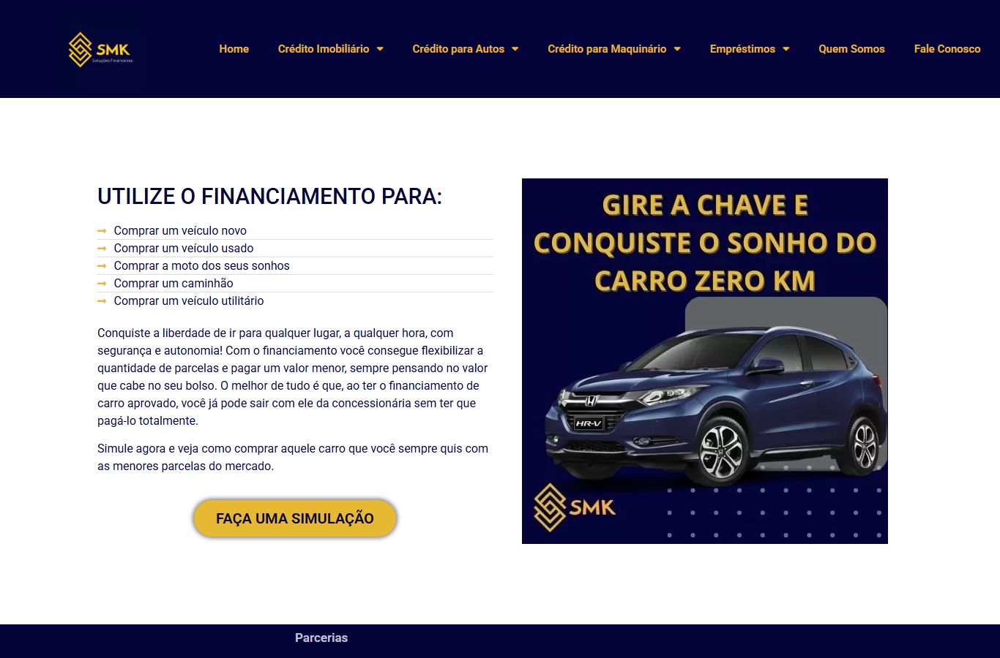
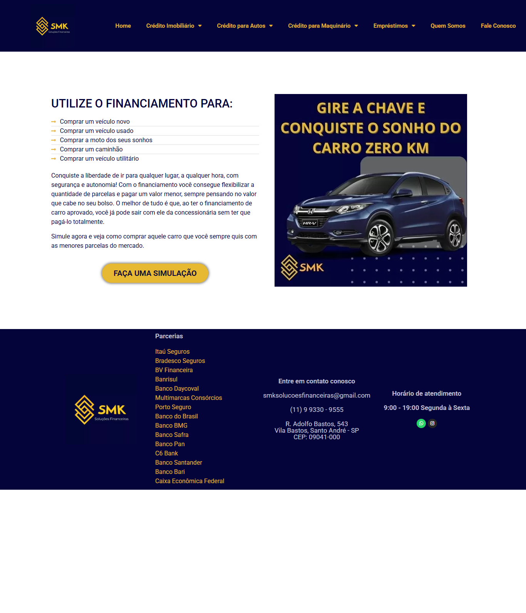

SIMIO · dossiê de candidato · campanha simio-20261119-174043-8bbc · gerado em 2026-11-19T21:22:03+00:00
http://smksolucoesfinanceiras.com/financiamento-de-veiculos-com-parcelas-acessiveis/
REVIEW_REQUIRED Prioridade MEDIUM · Cenário B_AMBIGUOUS_COMMUNICATION · Revisão humana: PENDING
Este dossiê apresenta indícios para apoio à auditoria. Não constitui conclusão regulatória. As conclusões automatizadas devem ser verificadas contra as evidências brutas abaixo (screenshots, catálogo e arquivos com hash). Conteúdo de terceiros é exibido como texto; links não são clicáveis por segurança.
A página analisada pertence à 'SMK Soluções Financeiras', que se apresenta com identidade visual, domínio e canais de contato próprios. A única referência à marca investigada é a menção textual a 'BV Financeira' no rodapé, dentro de uma lista de 'Parcerias' ao lado de mais de uma dezena de outros bancos e seguradoras concorrentes (contexto multibancos). Não há uso de logotipo do Banco BV, nem qualquer indício de tentativa de se passar por canal oficial ou causar confusão no consumidor. Configura menção comercial legítima (A_LEGITIMATE_COMMERCIAL_MENTION / NO_INDICATION).


| Ref | Tipo | Local | Conteúdo |
|---|---|---|---|
| E-URL | domain | url | URL final: https://smksolucoesfinanceiras.com/financiamento-de-veiculos-com-parcelas-acessiveis/ (domínio: smksolucoesfinanceiras.com) |
| E-DISC-001 | text | search_index | Índice de busca (grounding): smksolucoesfinanceiras.com — **SMK Soluções Financeiras** (`smksolucoesfinanceiras.com` – página de Financiamento de Veículos) | **Evidência:** Promotora de crédito que oferece botão de chamada para ação ("FAÇA UMA SIMULAÇÃO") para financiamento de carros, motos e caminhões, destacando a marca **BV Financeira** na seção de parcerias logo abaixo do simulador, utilizando contato via Gmail e telefone móvel sem detalhamento visível de credenciamento como correspondente bancário na seção de captação |
| E-SHOT-VIEWPORT | screenshot | viewport | evidence\C9630f47100\attempt-1\viewport.png (sha256 768fd489e8566f6e…) |
| E-SHOT-FULL | screenshot | page | evidence\C9630f47100\attempt-1\fullpage.png (sha256 1a01e4bd8c1d0d12…) |
| E-TITLE | title | head | Financiamento de Veículos - SMK Soluções Financeiras |
| E-META-1 | meta | head | description: Compre seu veículo novo ou usado, moto, caminhão ou utilitário com parcelas que cabem no bolso! Simule agora e conquiste sua liberdade! |
| E-META-2 | meta | head | og:site_name: SMK Soluções Financeiras |
| E-META-3 | meta | head | og:title: Financiamento de Veículos - SMK Soluções Financeiras |
| E-META-4 | meta | head | og:description: Compre seu veículo novo ou usado, moto, caminhão ou utilitário com parcelas que cabem no bolso! Simule agora e conquiste sua liberdade! |
| E-CANONICAL | meta | head | http://smksolucoesfinanceiras.com/financiamento-de-veiculos-com-parcelas-acessiveis/ |
| E-HEAD-1 | heading | page | UTILIZE O FINANCIAMENTO PARA: |
| E-HEAD-2 | heading | page | Parcerias |
| E-HEAD-3 | heading | page | Entre em contato conosco |
| E-HEAD-4 | heading | page | smksolucoesfinanceiras@gmail.com |
| E-HEAD-5 | heading | page | (11) 9 9330 - 9555 |
| E-HEAD-6 | heading | page | R. Adolfo Bastos, 543 Vila Bastos, Santo André - SP CEP: 09041-000 |
| E-HEAD-7 | heading | page | Horário de atendimento |
| E-HEAD-8 | heading | page | 9:00 - 19:00 Segunda à Sexta |
| E-FOLD | text | viewport (acima da dobra) | Home Crédito Imobiliário Crédito para Autos Crédito para Maquinário Empréstimos Quem Somos Fale Conosco UTILIZE O FINANCIAMENTO PARA: Comprar um veículo novo Comprar um veículo usado Comprar a moto dos seus sonhos Comprar um caminhão Comprar um veículo utilitário Conquiste a liberdade de ir para qualquer lugar, a qualquer hora, com segurança e autonomia! Com o financiamento você consegue flexibilizar a quantidade de parcelas e pagar um valor menor, sempre pensando no valor que cabe no seu bolso. O melhor de tudo é que, ao ter o financiamento de carro aprovado, você já pode sair com ele da concessionária sem ter que pagá-lo totalmente. Simule agora e veja como comprar aquele carro que você sempre quis com as menores parcelas do mercado. FAÇA UMA SIMULAÇÃO Parcerias |
| E-NAV | nav | header | Home <https://smksolucoesfinanceiras.com/> | Crédito Imobiliário <https://smksolucoesfinanceiras.com/financiamento-de-veiculos-com-parcelas-acessiveis/#> | Crédito para Autos <https://smksolucoesfinanceiras.com/financiamento-de-veiculos-com-parcelas-acessiveis/#> | Crédito para Maquinário <https://smksolucoesfinanceiras.com/financiamento-de-veiculos-com-parcelas-acessiveis/#> | Empréstimos <https://smksolucoesfinanceiras.com/financiamento-de-veiculos-com-parcelas-acessiveis/#> | Quem Somos <https://smksolucoesfinanceiras.com/quem-somos/> | Fale Conosco <https://smksolucoesfinanceiras.com/fale-conosco/> |
| E-CTA-1 | cta | page | FAÇA UMA SIMULAÇÃO <https://wa.me/message/477F5HS6GXDHP1> |
| E-CONTACT-1 | contact | page | FAÇA UMA SIMULAÇÃO <https://wa.me/message/477F5HS6GXDHP1> |
| E-CONTACT-2 | contact | page | Whatsapp <https://wa.me/message/477F5HS6GXDHP1> |
| E-CONTACT-3 | contact | page | Instagram <https://www.instagram.com/smksolucoes/> |
| E-IMG-1 | image | page (acima da dobra) | imagem alt='' src=https://smksolucoesfinanceiras.com/wp-content/webp-express/webp-images/uploads/2023/04/Logo-SMK.jpg.webp (114x114, acima da dobra) |
| E-IMG-2 | image | page | imagem alt='' src=https://smksolucoesfinanceiras.com/wp-content/webp-express/webp-images/uploads/2023/04/Logo-SMK.jpg.webp (182x182, abaixo da dobra) |
| E-TXT-001 | text | page | BV Financeira |
| E-TXT-002 | text | page | Banco Daycoval |
| E-TXT-003 | text | page | Banco do Brasil |
| E-TXT-004 | text | page | Banco BMG |
| E-TXT-005 | text | page | Banco Safra |
| E-TXT-006 | text | page | Banco Pan |
| E-TXT-007 | text | page | Banco Santander |
| E-TXT-008 | text | page | Banco Bari |
| E-TXT-009 | text | page | CEP: 09041-000 |
| E-TXT-010 | text | page | Horário de atendimento |
| E-TXT-011 | text | page |
| Dimensão | Sinal | Achado | Refs |
|---|---|---|---|
| VISUAL_IDENTITY | LEGITIMATE | A página apresenta identidade visual própria (SMK Soluções Financeiras, cores azul escuro e dourado, logotipo próprio no cabeçalho, banner e rodapé), sem qualquer semelhança ou tentativa de imitação da identidade visual do Banco BV. | E-SHOT-VIEWPORT E-SHOT-FULL E-IMG-1 E-IMG-2 |
| DECLARED_COMMERCIAL_IDENTITY | LEGITIMATE | O estabelecimento identifica-se claramente como 'SMK Soluções Financeiras' no domínio, título, cabeçalho e rodapé, apresentando endereço físico e contatos próprios. | E-URL E-TITLE E-META-2 E-HEAD-4 E-HEAD-6 E-SHOT-FULL |
| CORRESPONDENT_TRANSPARENCY | NEUTRAL | Embora não haja declaração formal de correspondente bancário nos termos da Resolução CMN 4.935/2021 nem exibição de CNPJ na página inspecionada, a atuação como intermediador multibancos fica evidente pela seção 'Parcerias' no rodapé, onde 'BV Financeira' aparece listada ao lado de diversas outras instituições financeiras. | E-HEAD-2 E-TXT-001 E-TXT-002 E-TXT-003 E-TXT-004 E-TXT-005 E-TXT-006 E-TXT-007 E-SHOT-FULL |
| INSTITUTIONAL_LANGUAGE | LEGITIMATE | A linguagem utilizada oferece serviços de intermediação/simulação de financiamento sob a marca própria da SMK, sem alegar ser canal oficial do Banco BV. | E-FOLD E-META-1 |
| LOGO_USAGE | LEGITIMATE | Não há uso do logotipo do Banco BV na página; apenas os logotipos da própria 'SMK Soluções Financeiras' são exibidos. | E-IMG-1 E-IMG-2 E-SHOT-FULL |
| SERVICE_JOURNEY | LEGITIMATE | A jornada convida o usuário a fazer uma simulação de financiamento de veículos com a SMK Soluções Financeiras, sem oferta de serviços pós-venda exclusivos de canais oficiais (como 2ª via de boleto ou quitação em nome do BV). | E-FOLD E-CTA-1 |
| CONTACT_CHANNELS | LEGITIMATE | Os canais de contato (e-mail smksolucoesfinanceiras@gmail.com, telefone, WhatsApp e Instagram @smksolucoes) estão claramente vinculados à SMK Soluções Financeiras. | E-HEAD-4 E-HEAD-5 E-CONTACT-2 E-CONTACT-3 |
| CONSUMER_CONFUSION | LEGITIMATE | Não há risco de confusão para o consumidor: 'BV Financeira' é citada apenas uma vez, em texto simples, dentro de uma lista de 14 instituições na seção 'Parcerias' no rodapé de uma empresa com marca própria bem destacada. | E-SHOT-FULL E-HEAD-2 E-TXT-001 |
A página analisada pertence à 'SMK Soluções Financeiras', que se apresenta com identidade visual, domínio e canais de contato próprios. A única referência à marca investigada é a menção textual a 'BV Financeira' no rodapé, dentro de uma lista de 'Parcerias' ao lado de mais de uma dezena de outros bancos e seguradoras concorrentes (contexto multibancos). Não há uso de logotipo do Banco BV, nem qualquer indício de tentativa de se passar por canal oficial ou causar confusão no consumidor. Configura menção comercial legítima (A_LEGITIMATE_COMMERCIAL_MENTION / NO_INDICATION).
Nenhum CNPJ ou razão social identificáveis no conteúdo coletado.
| Tipo | Valor | Ref | Contexto |
|---|---|---|---|
| domain | smksolucoesfinanceiras.com | E-URL | |
| smksolucoesfinanceiras@gmail.com | E-HEAD-4 | ||
| social_profile | https://www.instagram.com/smksolucoes/ | E-CONTACT-3 | |
| trade_name | SMK Soluções Financeiras | E-META-2 | |
| FAÇA UMA SIMULAÇÃO <https://wa.me/message/477F5HS6GXDHP1> | E-CONTACT-1 | ||
| Whatsapp <https://wa.me/message/477F5HS6GXDHP1> | E-CONTACT-2 |
Mapeamento indicativo para apoio à auditoria. Não constitui conclusão regulatória; a decisão definitiva pertence à auditoria.
Fonte: NORMATIVE
Art. 14. O contrato de correspondente deve estabelecer: [...] II - vedação à utilização, pelo contratado, de logomarca ou de outros atributos que sejam similares aos adotados pela instituição contratante em suas agências, postos de atendimento, sítio eletrônico na internet, aplicativo ou outras plataformas de comunicação em rede;
Hipótese: Uso de logomarca ou de atributos similares aos adotados pela contratante em seus canais. A norma disciplina correspondentes contratados; o responsável não foi identificado como correspondente.
Evidência observada: E-IMG-1 E-IMG-2
Informação faltante:
Fonte: NORMATIVE
Art. 14. O contrato de correspondente deve estabelecer: [...] III - divulgação ao público, pelo contratado, de sua condição de prestador de serviços à instituição contratante, identificada pelo nome com que é conhecida no mercado, com descrição dos produtos e serviços oferecidos e canais de contato da instituição contratante, inclusive de sua ouvidoria, em local visível, em destaque e em formato legível, por meio de: a) sítio eletrônico do correspondente na internet, acessível na página inicial; b) aplicativo e outras plataformas de comunicação em rede do correspondente; [...]
Hipótese: Há declaração da condição de correspondente/prestador, mas outros elementos da página (CONTACT_CHANNELS) podem contradizê-la ou reduzir seu efeito (destaque, legibilidade e identificação da contratante a verificar). A norma disciplina correspondentes contratados; o responsável não foi identificado como correspondente.
Evidência observada: E-CONTACT-1 E-CONTACT-2 E-FOLD E-TITLE
Informação faltante:
Fonte: NORMATIVE
Art. 3º O correspondente atua por conta e sob as diretrizes da instituição contratante, que assume inteira responsabilidade pelo atendimento prestado aos clientes e usuários por meio do contratado.
Hipótese: Atendimento ao público prestado por meio do contratado em condições que podem não seguir as diretrizes da contratante. A norma disciplina correspondentes contratados; o responsável não foi identificado como correspondente.
Evidência observada: E-CONTACT-1 E-CONTACT-2
Informação faltante:
Se o responsável não for correspondente contratado, os indícios podem caracterizar uso indevido de marca ou fraude, fora do escopo da Res. 4.935: avaliar encaminhamento às áreas jurídica/segurança.
Limitações: requisitos contratuais/internos não fornecidos: mapeamento limitado ao texto normativo
| Fonte | Consulta / hipótese | URL original | Título / trecho |
|---|---|---|---|
| grounding | páginas de financiamento de veículos usando a marca Banco BV ou bv financeira mantidas por lojas, promotoras ou correspondentes bancários onde a marca do banco aparece em destaque principal, com simulador ou captação sem identificar claramente a condição de correspondente independente H2-product:financiamento de veículos | http://smksolucoesfinanceiras.com/financiamento-de-veiculos-com-parcelas-acessiveis/ | smksolucoesfinanceiras.com **SMK Soluções Financeiras** (`smksolucoesfinanceiras.com` – página de Financiamento de Veículos) | **Evidência:** Promotora de crédito que oferece botão de chamada para ação ("FAÇA UMA SIMULAÇÃO") para financiamento de carros, motos e caminhões, destacando a marca **BV Financeira** na seção de parcerias logo abaixo do simulador, utilizando contato via Gmail e telefone móvel sem detalhamento visível de credenciamento como correspondente bancário na seção de captação |
Original: http://smksolucoesfinanceiras.com/financiamento-de-veiculos-com-parcelas-acessiveis/
Final: https://smksolucoesfinanceiras.com/financiamento-de-veiculos-com-parcelas-acessiveis/
| Artefato | Caminho | SHA-256 | Bytes |
|---|---|---|---|
| screenshot_viewport | evidence\C9630f47100\attempt-1\viewport.png | 768fd489e8566f6e4f768e2503f6a4795bc894868eedab25b7ffe1e0c3bff6e7 | 330668 |
| screenshot_full | evidence\C9630f47100\attempt-1\fullpage.png | 1a01e4bd8c1d0d1268379627ae1f9b209070eda9cde485eeccc29d3c9ec67275 | 400909 |
| html | evidence\C9630f47100\attempt-1\page.html.txt | 525ecceb8215ba540dbdc5c5825b6e15b16fb085b61faf1abc9ce225e3f92315 | 64683 |
| text | evidence\C9630f47100\attempt-1\text.txt | 80667058b7852dbcc03fd1cfbd3a87f2a548db85dc9d72ae10505450b15ea4da | 1250 |
| page_data | evidence\C9630f47100\attempt-1\page.json | 5d4e504589b4cb468d39b586ae1fba0749c4e8eaa2b66dd82825cf3191aa8f49 | 8328 |
| Quando | De | Para | Nota |
|---|---|---|---|
| 2026-11-19T18:10:11+00:00 | DISCOVERED | QUEUED | prioritised (score 1.0) |
| 2026-11-19T18:24:59+00:00 | QUEUED | COLLECTING | |
| 2026-11-19T18:25:12+00:00 | COLLECTING | COLLECTED | |
| 2026-11-19T18:25:12+00:00 | COLLECTED | ANALYZING | |
| 2026-11-19T18:25:41+00:00 | ANALYZING | COMPLETED |